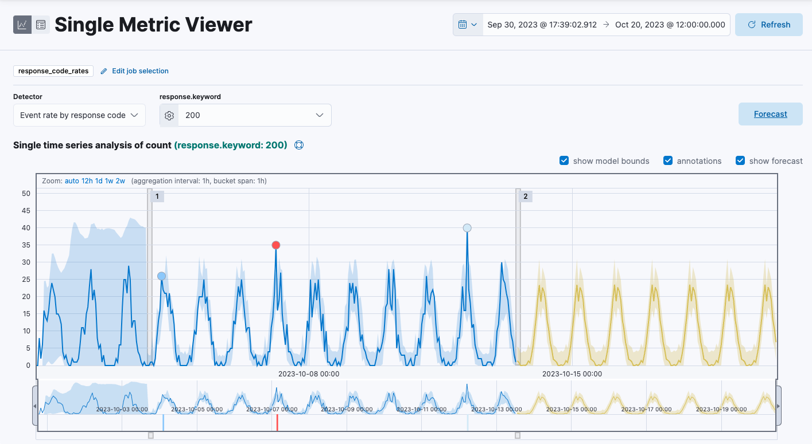

Forecast future behavior
edit[preview] This functionality is in technical preview and may be changed or removed in a future release. Elastic will work to fix any issues, but features in technical preview are not subject to the support SLA of official GA features.
Required role
The Editor role or higher is required to create a forecast for an anomaly detection job. To learn more, refer to Assign user roles and privileges.
In addition to detecting anomalous behavior in your data, you can use the machine learning features to predict future behavior.
You can use a forecast to estimate a time series value at a specific future date. For example, you might want to determine how much disk usage to expect next Sunday at 09:00.
You can also use a forecast to estimate the probability of a time series value occurring at a future date. For example, you might want to determine how likely it is that your disk utilization will reach 100% before the end of next week.
To create a forecast:
- Create an anomaly detection job and view the results in the Single Metric Viewer.
- Click Forecast.
- Specify a duration for your forecast. This value indicates how far to extrapolate beyond the last record that was processed. You must use time units, for example 1w, 1d, 1h, and so on.
- Click Run.
-
View the forecast in the Single Metric Viewer:
- The line in the chart represents the predicted data values.
- The shaded area represents the bounds for the predicted values, which also gives an indication of the confidence of the predictions.
- Note that the bounds generally increase with time (that is to say, the confidence levels decrease), since you are forecasting further into the future. Eventually if the confidence levels are too low, the forecast stops.
-
(Optional) After the job has processed more data, click the Forecast button again to compare the forecast to actual data.
The resulting chart will contain the actual data values, the bounds for the expected values, the anomalies, the forecast data values, and the bounds for the forecast. This combination of actual and forecast data gives you an indication of how well the machine learning features can extrapolate the future behavior of the data.